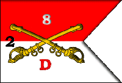

Delta Company Honor Roll
Dedicated to the memory of the men of Delta Company, 2nd Battalion, 8th Cavalry Regiment (Airmobile) who gave the ultimate sacrifice in the Republic of Vietnam[cite: 8].

Download Official Honor Roll (PDF)
Skull 71–72 Chopper Crash Memorial
The Virtual Wall® Companion Registry
* Asterisk indicates the soldier was attached to Delta Company, 2nd Battalion, 8th Cavalry when killed in action[cite: 8]. Click highlighted names to view personal tribute records.
| Rank | Name & Hometown | Date of Birth | Date of Casualty (DOD) | Wall Panel |
|---|---|---|---|---|
| Sgt | Richard Arthur Coffey, Los Angeles, CA | 21-Oct-41 | 04-Nov-65 | 3E/17 |
| Pfc | Wright Bartwyn Hamill, Albany, OR | 26-Aug-46 | 04-Nov-65 | 3E/17 |
| Cpl | Eddie Lee Hill Jr., Mobile, AL | 07-Jul-40 | 04-Nov-65 | 3E/18 |
| Sp4 | Terry Allen Rippy, Hammond, OR | 30-Sep-42 | 22-Apr-66 | 6E/128 |
| Sgt | Paul William Malec, Summerdale, AL | 24-Jan-37 | 14-May-66 | 7E/59 |
| Pfc | Fermin Saldana Jr., San Antonio, TX | 10-Feb-46 | 23-May-66 | 7E/106 |
| 2Lt | Michael Douglas Derosier, Ft. Walton Beach, FL | 16-Apr-43 | 19-Sep-66 | 10E/117 |
| Ssg | Paul Edward Floyd, Jr., Clinton, MA | 08-May-34 | 14-Oct-66 | 11E/73 |
| Cpl | Donald Francis Yates, Round Lake, NY | 12-Sep-46 | 28-Jan-67 | 14E/94 |
| Cpl | Peter Joseph Keller Jr., Detroit, MI | 31-Jan-45 | 28-Jan-67 | 14E/91 |
| Sgt | William Burton Jr., Hopkins, SC | 02-Jan-45 | 01-Mar-67 | 15E/125 |
| Cpl | Robert Edward Johnson, Highland, NY | 14-Nov-46 | 01-Mar-67 | 15E/128 |
| Pfc | Robert Lester Van Gieson, Van Nuys, CA | 21-May-47 | 12-Mar-67 | 16E/71 |
| Pfc | Michael Neal Johnson, Brentwood, MD | 19-Nov-47 | 18-Mar-67 | 16E/105 |
| Ssg | John Henry Willis, Philadelphia, PA* | 02-Nov-42 | 18-Mar-67 | 16E/105 |
| Pfc | Ralph Traylor Woodall, Jr., Jesup, GA | 14-Apr-44 | 18-Mar-67 | 16E/108 |
| Sp4 | Clayton Middleton, Cincinnati, OH* | 26-Sep-45 | 18-Mar-67 | 16E/103 |
| Pfc | Vance George Williams, Dallas, TX | 21-Nov-46 | 02-Apr-67 | 17E/94 |
| Sp4 | Robert James Bohmer, Milwaukee, WI | 09-Mar-46 | 23-May-67 | 20E/089 |
| Pfc | Daniel Ivan Nelson, Rutledge, MN | 19-Oct-47 | 30-May-67 | 21E/18 |
| Pfc | George Steven Sutt, Indianapolis, IN | 04-Aug-47 | 30-May-67 | 21E/19 |
| Pfc | Charles William Krueger, Menasha, WI | 13-Jul-47 | 31-May-67 | 21E/23 |
| Cpl | Lonney Lewis Ehlers, Rhodes, MI | 09-Jun-47 | 01-Jun-67 | 21E/27 |
| Sp4 | Terry Russell McComb, Lapeer, MI | 01-Nov-46 | 05-Jun-67 | 21E/59 |
| Pfc | Clyde Richard Houser, Jr., Trexlertown, PA | 15-Mar-49 | 13-Jun-67 | 21E/98 |
| Pfc | Michael Paul Santoroski | 25-Jan-47 | 26-Sep-67 | 27E/16 |
| 2Lt | Michael E. Bennett, Brentwood, NH* | 14-Apr-46 | 01-Nov-67 | 28E/107 |
| Sp4 | Allen Eugene Follett, Independence, MO | 13-Nov-44 | 11-Dec-67 | 31E/79 |
| Sp4 | John Paul Paulson Jr., Neenah, WI | 15-Aug-47 | 11-Dec-67 | 31E/82 |
| Sgt | Wyatt Cecil Gordon, Lawrence, IN | 03-Apr-48 | 31-Jan-68 | 36E/4 |
| Sp4 | Robert Eugene Gardner, Sylacauga, AL | 22-Sep-42 | 19-Apr-68 | 50E/46 |
| Cpl | Richard Allen Carlson, San Francisco, CA | 30-Mar-48 | 24-May-68 | 67E/5 |
| Sp4 | Larry Dean Novak, Platte Center, NE | 17-Mar-48 | 24-May-68 | 68E/5 |
| Sgt | Jacob Robinson Weldin, Wilmington, DE | 18-Aug-46 | 06-Jun-68 | 59W/17 |
| Pfc | Brian Carl Winner, Detroit, MI | 08-Sep-47 | 07-Jun-68 | 58W/1 |
| Pfc | John Clark Wheeler, Eugene, OR | 06-Mar-47 | 12-Jun-68 | W57/e |
| Sgt | Robert James Ross, Charlotte, NC | 01-Jul-47 | 01-Jul-68 | 54W/32 |
| 1Lt | Harrison E. Woehnker, Jr., Minneapolis, MN* | 07-Jul-43 | 18-Jul-68 | 51W/9 |
| Cpl | Stanley Lloyd Grunstad, Everett, WA* | 21-Apr-47 | 19-Jul-68 | 51W/10 |
| Pfc | Roger Theodore Fast, Butterfield, MN | 14-Jan-48 | 19-Aug-68 | 48W/54 |
| Sp4 | Ronald Duane Golden, Superior, WI | 22-Jul-44 | 20-Aug-68 | 47W/7 |
| Cpt | John Robin Wiest, Billings, MT* | 11-May-40 | 12-Oct-68 | 41W/055 |
| Pfc | Michael John Cromie, Harper Woods, MI | 06-Apr-48 | 18-Nov-68 | 38W/6 |
| Sp4 | Raymond Joseph Ahern, Jr., Philadelphia, PA* | 14-Jan-48 | 26-Nov-68 | 38W/63 |
| Sp4 | Willie Gerald Jones, Fort Lauderdale, FL | 15-Nov-47 | 04-Dec-68 | 37W/40 |
| Sp4 | Donald Robert Stoltz, Milwaukee, WI | 17-Jan-48 | 04-Dec-68 | 37W/42 |
| Ssg | William Charles Williams, Horton, MS | 15-Oct-46 | 04-Dec-68 | 37W/44 |
| Sp4 | Elliot Velez-Rodriguez, Vega Baja, PR* | 29-May-47 | 21-Jan-69 | 34W/54 |
| Cpl | Warren Reed Eskridge, Tangier Island, VA | 09-Sep-47 | 28-Jan-69 | 33W/7 |
| Sp4 | Carl Dale Pipher, Canton, OH | 31-Mar-49 | 28-Jan-69 | 33W/11 |
| Cpl | James Edmonds, Burlington, NC | 12-Jul-48 | 05-Feb-69 | 33W/62 |
| Sp4 | Chester Jon Kmit, Williamsburg, MA | 11-Apr-45 | 05-Feb-69 | 33W/65 |
| Pfc | Neil Shipp Brown, Salt Lake City, UT | 07-Aug-44 | 02-May-69 | 26W/97 |
| Cpl | George Arthur Brown, Whaleyville, VA | 19-Jan-48 | 12-May-69 | 25W/62 |
| Cpl | James Robert Dunkle | 12-Oct-48 | 13-May-69 | 25W/98 |
| 1Lt | John Preston Karr, Kenner, LA | 14-Jan-47 | 25-May-69 | 24W/104 |
| Pfc | Wayne Eric Garven, Mt. Vernon, OH | 04-Feb-48 | 25-May-69 | 24W/102 |
| Cpl | Richard Neal White, Golden Valley, NM | 30-Jul-46 | 25-May-69 | 24W/109 |
| Pfc | Thomas Michael Merchand, West Chester, MA | 19-Nov-47 | 12-Jun-69 | W22/34 |
| Pfc | Daniel Moran Zuniga, San Antonio, TX | 02-Jun-48 | 11-Aug-69 | W19/06 |
| Cpl | Michael Dennis Muse, Garland, TX | 07-Jan-48 | 16-Aug-69 | 19W/51 |
| Cpl | William John Anderson, Jr., Lorain, OH | 05-Jun-48 | 24-Aug-69 | 19W/105 |
| Sp4 | Hugh Henry Sarah, Plymouth, MI | 05-Aug-45 | 23-Sep-69 | 17W/1 |
| Cpl | Albert Harold Altizer, Squire, WV | 11-Apr-49 | 08-Oct-69 | 17W/49 |
| Pfc | Joseph Henning Benson, Coram, MT | 16-Feb-49 | 08-Oct-69 | 17W/49 |
| Pfc | Jerome Milton Taylor, Battle Creek, MI | 14-Nov-47 | 08-Oct-69 | 17W/49 |
| Sp4 | Anthony Jack Carlucci, New York, NY | 22-May-49 | 20-Nov-69 | 16W/98 |
| Cpl | Peter Karl Matthei, St. Louis, MO | 06-Sep-45 | 20-Nov-69 | 16W/101 |
| Pfc | Kenneth Frierson, Alcolu, SC | 09-Nov-49 | 25-Jan-70 | 14W/64 |
| Pfc | Tony Rava, Mt. Angel, OR | 30-Aug-49 | 18-Feb-70 | 13W/31 |
| Cpl | Kenneth Michael Flashner, New Orleans, LA | 21-Nov-46 | 28-Feb-70 | 13W/68 |
| Cpl | Francis Louis Ware III, Youngstown, OH | 10-Sep-49 | 06-Mar-70 | 13W/89 |
| Pfc | Thomas Michael Brockmeier, Marietta, OH | 20-Aug-49 | 07-Mar-70 | W13/91 |
| Cpl | Michael Charles Jackson, Simi, CA | 10-Sep-49 | 17-Mar-70 | 12W/013 |
| Sp4 | Stephen John Alsup, Rumford, RI | 19-Aug-49 | 18-Mar-70 | W12/99 |
| Sgt | Richard Lee Wiseman, Elkhart, IN* | 31-Aug-48 | 18-Mar-70 | 12W/019 |
| Ssg | James Cooney, New York, NY | 03-May-47 | 19-May-70 | 10W/64 |
| Cpl | Kenneth Walter Gonder, New Brunswick, NJ | 03-May-47 | 19-May-70 | 10W/64 |
| Cpl | Craig Thomas Waterman, Rockwell City, IA | 30-Sep-49 | 03-Sep-70 | 7W/37 |
| Pvt | James Lee Getter, West Helena, AR | 18-Aug-51 | 16-Mar-71 | 4W/52 |
| Cpl | James Melvin Cardwell, Castro Valley, CA | 25-Jun-50 | 20-Apr-71 | 4W/135 |
| Cpl | Danny George Drinkard, Ferndale, MI | 15-Oct-50 | 20-Apr-71 | 4W/135 |
| Cpl | Joseph Lindsey Hall, Little Rock, AR | 05-Apr-51 | 20-Apr-71 | 4W/136 |
| Cpl | Stanton Gerald Sargent, Grenada, MS | 15-Jan-50 | 21-Apr-71 | 3W/1 |
| Sp4 | Charles W. Roberts, Jr., Atlanta, GA | 13-Nov-49 | 18-Jul-71 | 3W/110 |
| Pfc | William John Makowski, Buffalo, NY | 16-Oct-51 | 21-Oct-71 | 2W/46 |
| Sp4 | Oscar Aguilar, Fairfield, CA | 05-Apr-51 | 10-May-72 | 1W/15 |
| Sgt | William Arvel Boatright, Abbott, AR | 28-Dec-49 | 10-May-72 | 1W/16 |
| Pfc | Steven Edward Bowersock, Lima, OH | 25-Sep-51 | 10-May-72 | 1W/16 |
| Sgt | Edward Denzel Burnett, Jay, OK | 06-Dec-51 | 10-May-72 | 1W/16 |
| Sp4 | David Cruz Flores, Agana, GM | 20-Aug-52 | 10-May-72 | 1W/17 |
| Sgt | Dieter Kuno Freitag, Ft. Dix, NJ | 10-Sep-46 | 10-May-72 | 1W/17 |
| Pvt | James Douglas Groves, Maysville, KY | 06-Jul-53 | 10-May-72 | 1W/17 |
| Sp4 | Frank Theodore Henson, Massapequa, NY | 06-Oct-51 | 10-May-72 | 1W/18 |
| Sp4 | Donald Edward Howell, Los Angeles, CA | 14-Nov-47 | 10-May-72 | 1W/19 |
| Sp4 | Freddie Jackson, Cocoa, FL | 14-Feb-44 | 10-May-72 | 1W/19 |
| Cpt | Kenneth Rosenberg, New York, NY | 25-Oct-42 | 10-May-72 | 1W/19 |
| Sp4 | Gary Robert Monteleone, Saugus, CA | 27-Jul-52 | 10-May-72 | 1W/20 |
| Pfc | Dean Anthony Phillips, Tiro, OH | 14-Nov-51 | 10-May-72 | 1W/20 |
| Sgt | James Christian Jensen, Elsinore, UT | 21-Jun-51 | 10-May-72 | 1W/21 |
| Pvt | Jackie Ray, Jackson, MI | 19-Apr-49 | 10-May-72 | 1W/21 |
| Sp4 | Richard Ridgeway, Bloomington, IL | 13-Aug-51 | 10-May-72 | 1W/21 |
| Pfc | John Tenerio Sablan, Agana, GM | 03-Jun-53 | 10-May-72 | 1W/21 |
| Sp4 | Clarence L. Saulsberry, Jr., Chicago, IL | 31-Dec-51 | 10-May-72 | 1W/22 |
| Sp4 | Raymond Joseph Shiko, Kingston, PA | 02-Aug-53 | 10-May-72 | 1W/22 |
| Sp4 | David Wesley Sulser, Galion, OH | 28-Oct-51 | 10-May-72 | 1W/22 |
| Pfc | Thomas Eugene Wood, Tacoma, WA | 16-Aug-53 | 10-May-72 | 1W/22 |